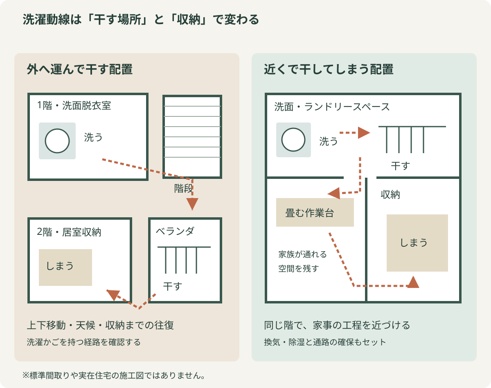

1. 乾燥機があっても、部屋干しの悩みは残る
内閣府の2026年3月の消費動向調査では、二人以上の世帯における「洗濯機一体型」の衣類乾燥機の普及率は40.8％です。普及率は、その製品を所有している世帯の割合で、乾燥機能を使う頻度を示す数字ではありません。身近になった乾燥機ですが、衣類や使い方によっては、室内干しも必要になります。
夜に洗濯する日も、花粉が気になる日も、室内で干せる場所があると助かります。衣類と生活時間に合わせて、乾燥機や外干しと使い分けていきましょう。
2. まず試せる、身近な店の便利グッズ
道具を選ぶ前に「何に特に困っているか」を一つ決めてみてください。シーツが場所を取るのか、壁際に干すと衣類が壁に触れてしまうのか。困りごとが具体的になると、試したい道具も絞れます。
| 困りごと | 試す道具の候補 | 確認する条件 |
|---|
| シーツなどの大きな布を省スペースで干したい | スパイラル型のハンガー | 耐荷重、干す高さ、布の重なり |
| 壁際の空間を使いたい | 壁際で使いやすい形のハンガー | 設置場所、掛け方、壁や衣類の接触 |
| タオルを広げて干したい | バスタオル用の伸縮ハンガー | 広げた幅と、隣の洗濯物との間隔 |
| 対応する窓まわりに干す場所を増やしたい | 窓枠などに取り付ける室内物干し | 取り付け先の形・強度、専用品の適合条件と耐荷重 |
| 使う時だけ干し場所を追加したい | 折りたたみ式の室内物干しスタンド | 広げたときの寸法、安定性、収納場所 |
購入前に、置きたい場所の幅と高さを測っておきましょう。取り付けるタイプは、商品説明で枠の形や厚さ、耐荷重を確かめます。
SNSで見かけた道具も、使う場面を想像するきっかけになります。「わが家ならどこに掛けるか」を考えながら、商品の説明と照らし合わせてみましょう。
干した状態でも通れるか、使わない時にどこへ片づけるか。そこまで考えると、道具が増えてかえって部屋を狭くすることも防げます。
3. 浴室暖房乾燥機・衣類乾燥機と物干し金物を、暮らしに合わせる
居室を洗濯物で占有されたくないなら、浴室暖房乾燥機を使う方法があります。衣類乾燥に対応する製品を選び、取扱説明書に従って洗濯物の量と干す位置を決めます。入浴前に取り込める時間帯に運転するなど、家族の生活とも合わせる必要があります。
後付けや交換を考える時は、浴室の構造、電源やダクト、取付寸法を確認します。天井に室内物干し金物を付ける場合も、下地と耐荷重、竿の高さ、洗濯物を掛けた時の通路幅が大切です。取り付けられる位置と換気設備は、施工店に一緒に相談すると計画がまとまります。
設置後効果的に使用したいなら換気機能も組み合わせ、フィルターも取扱説明書に沿って手入れします。人生100年時代のリフォーム応援ナビサイトの浴室・洗面の設備情報からは、自宅に合う製品の候補を探せます。
また、洗濯機とは別に設置する衣類乾燥機も、室内干しの負担を減らす選択肢です。ガス式・電気式などがあり、入浴の時間を気にせずに乾燥を進められます。乾燥できる衣類や容量、設置スペース、ガス・電気・排気の条件は製品で異なります。設置条件は販売店や施工店に相談しましょう。
4. 間取りで比べる、運ぶ洗濯と近くで完結する洗濯
一階で洗い、二階のベランダへ運び、取り込んで別の部屋にしまう。この往復を減らす方法が、洗濯機、干し場、作業台、収納を近づける計画です。二つの配置を図で比べてみましょう。
濡れた洗濯物の入ったかごを持って階段を上る時は、手がふさがり、足元も見えにくくなります。今は何ともなくても、年を取れば危険度も増します。それに、毎日のことなので、運ぶ回数が減れば、そのぶん負担も軽くなります。

洗う・干す・しまう場所の違いを比べる模式図。自宅での移動を思い浮かべながら見てみましょう。
例えば、洗面脱衣室の隣に干し場を設け、その横にたたむカウンターと収納を置く。洗ってからしまうまでを近い場所で済ませる配置です。自宅ではどの移動を短くできそうか、今の間取りと比べてみてください。
干す・たたむ・しまう場所を近づけて、運ぶ手間を減らす。5. 今の家なら、どこまで変えられるか
洗濯かごを持って移動する回数を、一度数えてみましょう。乾いた服をリビングに仮置きしてから収納へ運んでいるなら、しまう場所を近づけるだけでも段取りが変わります。
改修するならどういうことができるのか、表にまとめてみました。
| できること | 具体例 | 実行前に確認すること |
|---|
| 家具・道具の移動 | 収納を近くへ移す、物干しを使う時だけ出す | 通路、転倒の危険性、湿った衣類との接触 |
| 小さな改修 | 室内物干し金物、作業台、収納棚の設置 | 下地、耐荷重、換気を妨げないか、家族の身長 |
| 設備の導入 | 衣類乾燥機、浴室暖房乾燥機、除湿機などの導入 | 電源・排気・排水・ガス等、搬入、音、維持費 |
| 間取りの変更 | 洗面脱衣と干し場、収納を近づける | 構造、配管、入浴時のプライバシー、マンションの管理規約や賃貸借契約 |
干した状態でも通れるか、乾いた服をすぐしまえるか。実際の動きを思い浮かべてから、必要な広さや設備を考えると、使いやすい計画に近づきます。
6. 運ぶ手間を減らして、洗濯の後の時間を残す
改修の工夫として私が注目したいのは、乾く速さだけでなく、洗った後に何度運ぶかです。家の中の往復が負担なら、収納の位置を変えることにも意味があります。
夜はリビングでくつろぎたい。その希望から干す場所を見直してよいと思います。自分たちの生活に合わせて、しまう場所まで含めて整えていきたいですね。